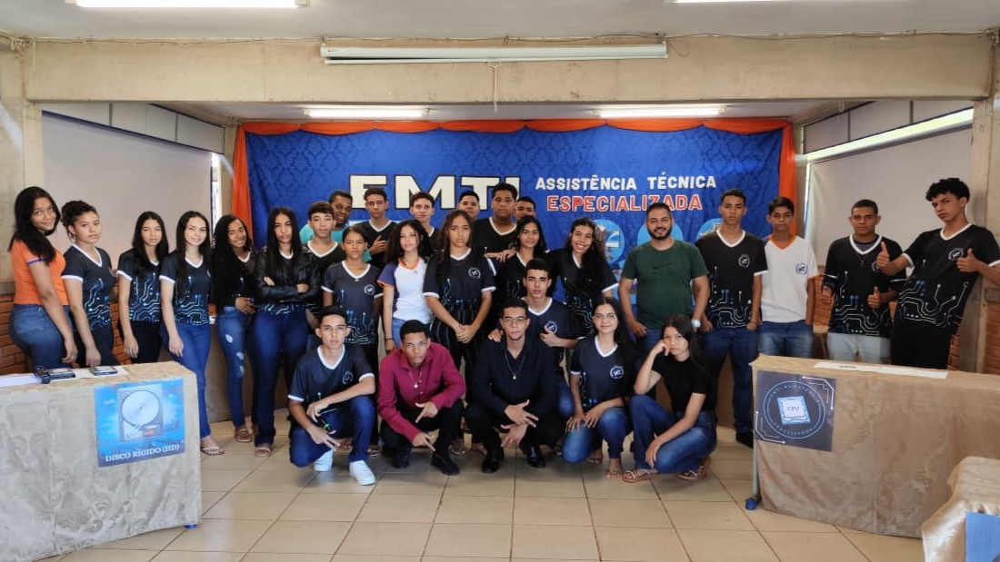

Galeria de fotos
Explore abaixo todos os projetos desenvolvidos pelos alunos do curso técnico em Informática.
Escola Estadual Maria Barbosa Leite
PROJETOS
Aqui você encontra todos os projetos desenvolvidos pelos alunos do curso técnico em Informática da Escola Estadual Maria Barbosa Leite. São trabalhos que aplicam o que aprendemos em sala de aula, unindo teoria, prática e criatividade
Conheça todos os projetosProjetos do curso
Os projetos desenvolvidos ao longo do curso técnico em Informática representam o aprendizado dos alunos e mostram como os conhecimentos de programação, redes, design, hardware e outras áreas são aplicados na prática
Sites, sistemas e aplicações em HTML, CSS e JavaScript
Projetos desenvolvidos em equipe, unindo diferentes habilidades
Participação e organização das gincanas escolares, com foco em trabalho em equipe
Registros das viagens realizadas pela turma durante o curso
Explore abaixo todos os projetos desenvolvidos pelos alunos do curso técnico em Informática.